How to code with multiple computers without causing conflicts Como programar com múltiplos computadores sem causar conflitos Cómo programar con múltiples computadoras sin causar conflictos
When you are working on a project, you may want to use multiple computers. This is common for students who work on their assignments at home and at school. Quando você está trabalhando em um projeto, pode querer usar múltiplos computadores. Isso é comum para estudantes que trabalham em suas tarefas em casa e na escola. Cuando está trabajando en un proyecto, es posible que desee usar múltiples computadoras. Esto es común para estudiantes que trabajan en sus tareas en casa y en la escuela.
To do this, you need to make sure that you are using GitHub correctly to avoid conflicts. Here are the steps to follow: Para fazer isso, você precisa garantir que está usando o GitHub corretamente para evitar conflitos. Aqui estão os passos a seguir: Para hacer esto, debe asegurarse de que está usando GitHub correctamente para evitar conflictos. Aquí están los pasos a seguir:
- Make sure you have Git installed on all computers. Certifique-se de ter o Git instalado em todos os computadores. Asegúrese de tener Git instalado en todas las computadoras.
- Clone your GitHub repository to each computer. Clone seu repositório do GitHub em cada computador. Clone su repositorio de GitHub en cada computadora.
- Before you start working, pull the latest changes from GitHub. Antes de começar a trabalhar, faça pull das alterações mais recentes do GitHub. Antes de comenzar a trabajar, haga pull de los últimos cambios de GitHub.
- When you finish working, commit your changes and push them to GitHub. Quando terminar de trabalhar, faça commit das suas alterações e envie-as para o GitHub com push. Cuando termine de trabajar, haga commit de sus cambios y envíelos a GitHub con push.
- Before switching computers, always pull the latest changes from GitHub. Antes de trocar de computador, sempre faça pull das alterações mais recentes do GitHub. Antes de cambiar de computadora, siempre haga pull de los últimos cambios de GitHub.
By following these steps, you can work on your project from multiple computers without causing conflicts. If you do encounter a conflict, Git will help you resolve it. Seguindo esses passos, você pode trabalhar no seu projeto em múltiplos computadores sem causar conflitos. Se você encontrar um conflito, o Git ajudará você a resolvê-lo. Siguiendo estos pasos, puede trabajar en su proyecto desde múltiples computadoras sin causar conflictos. Si encuentra un conflicto, Git le ayudará a resolverlo.
For more information on how to use Git and GitHub, you can refer to the GitHub Quickstart Guide. Para mais informações sobre como usar o Git e o GitHub, você pode consultar o Guia de Início Rápido do GitHub (Somente em inglês). Para más información sobre cómo usar Git y GitHub, puede consultar la Guía de Inicio Rápido de GitHub (Solo en inglés).
Remember to always commit your changes and push them to GitHub before switching computers. This will ensure that your work is saved and can be accessed from any computer. Lembre-se de sempre fazer commit das suas alterações e enviá-las para o GitHub com push antes de trocar de computador. Isso garantirá que seu trabalho seja salvo e possa ser acessado de qualquer computador. Recuerde siempre hacer commit de sus cambios y enviarlos a GitHub con push antes de cambiar de computadora. Esto asegurará que su trabajo esté guardado y pueda accederse desde cualquier computadora.
Here are the step-by-step instructions Aqui estão as instruções passo a passo Aquí están las instrucciones paso a paso
Follow the instructions found in the Setup New Computer. These instructions are specific to school work and you may have to do other things for work setup. Siga as instruções encontradas em Configurar Novo Computador. Essas instruções são específicas para trabalhos escolares e você pode ter que fazer outras coisas para configuração de trabalho. Siga las instrucciones que se encuentran en Configurar Nueva Computadora. Estas instrucciones son específicas para tareas escolares y puede que deba hacer otras cosas para la configuración del trabajo.
Open VSCode on your computer and go to the Source Control icon Abra o VSCode no seu computador e vá para o ícone de Source Control Abra VSCode en su computadora y vaya al ícono de Source Control
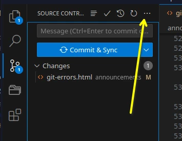
Then click on the 3 dots to the right of Changes and select Branch - Create New Branch Em seguida, clique nos 3 pontos à direita de Changes e selecione Branch - Create New Branch Luego haga clic en los 3 puntos a la derecha de Changes y seleccione Branch - Create New Branch
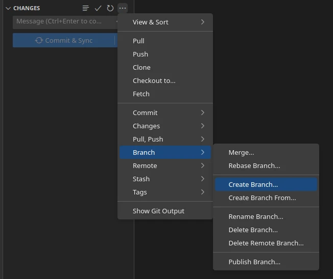
Enter a name for your branch, such as "dev" and press Enter. The branch name can be anything you want to use. Digite um nome para seu branch, como "dev" e pressione Enter. O nome do branch pode ser qualquer coisa que você queira usar. Ingrese un nombre para su branch, como "dev" y presione Enter. El nombre del branch puede ser cualquier cosa que desee usar.
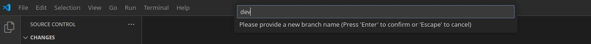
Click the Publish Branch button that appears at the top of the Source Control panel. This will create the branch on GitHub and set it as the current branch in VSCode. Clique no botão Publish Branch que aparece no topo do painel de Source Control. Isso criará o branch no GitHub e o definirá como o branch atual no VSCode. Haga clic en el botón Publish Branch que aparece en la parte superior del panel de Source Control. Esto creará el branch en GitHub y lo establecerá como el branch actual en VSCode.
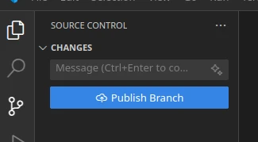
Now you can make changes to your code without affecting the main branch. When you are ready to save your changes, you can commit them to the new branch. You can verify that you are on the new branch by checking the branch name in the bottom left corner of the VSCode window. Agora você pode fazer alterações no seu código sem afetar o branch main. Quando estiver pronto para salvar suas alterações, você pode fazer commit delas no novo branch. Você pode verificar que está no novo branch verificando o nome do branch no canto inferior esquerdo da janela do VSCode. Ahora puede hacer cambios en su código sin afectar el branch main. Cuando esté listo para guardar sus cambios, puede hacer commit de ellos en el nuevo branch. Puede verificar que está en el nuevo branch revisando el nombre del branch en la esquina inferior izquierda de la ventana de VSCode.
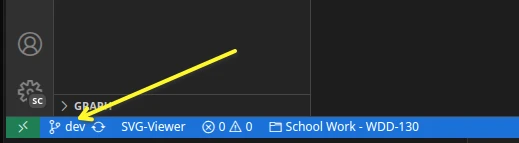
Now you can make all the edits you want on this computer. To use the same branch on another computer, you need to follow these steps: Agora você pode fazer todas as edições que quiser neste computador. Para usar o mesmo branch em outro computador, você precisa seguir estes passos: Ahora puede hacer todas las ediciones que desee en esta computadora. Para usar el mismo branch en otra computadora, debe seguir estos pasos:
- Commit and sync your changes from the original computer to GitHub. Faça commit e sync das suas alterações do computador original para o GitHub. Haga commit y sync de sus cambios de la computadora original a GitHub.
- Open VSCode on the new computer. Abra o VSCode no novo computador. Abra VSCode en la nueva computadora.
- Clone your GitHub repository to the new computer if not already on your computer. Clone seu repositório do GitHub no novo computador, se ainda não estiver no seu computador. Clone su repositorio de GitHub en la nueva computadora si aún no está en su computadora.
- Open the Source Control panel and click on the 3 dots to the right of Changes. Abra o painel de Source Control e clique nos 3 pontos à direita de Changes. Abra el panel de Source Control y haga clic en los 3 puntos a la derecha de Changes.
- Select Branch - Checkout to Branch and choose the branch you created. Selecione Branch - Checkout to Branch e escolha o branch que você criou. Seleccione Branch - Checkout to Branch y elija el branch que creó.
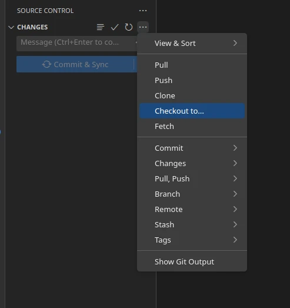
Now you can continue working on the same branch on the new computer. Remember to always pull the latest changes from GitHub before making any changes, and push your changes when you are done. Agora você pode continuar trabalhando no mesmo branch no novo computador. Lembre-se de sempre fazer pull das alterações mais recentes do GitHub antes de fazer qualquer alteração, e enviar suas alterações com push quando terminar. Ahora puede continuar trabajando en el mismo branch en la nueva computadora. Recuerde siempre hacer pull de los últimos cambios de GitHub antes de hacer cualquier cambio, y enviar sus cambios con push cuando termine.
Make sure to always do a pull request before you start to work on the new computer. Certifique-se de sempre fazer um pull antes de começar a trabalhar no novo computador. Asegúrese de siempre hacer un pull antes de comenzar a trabajar en la nueva computadora.
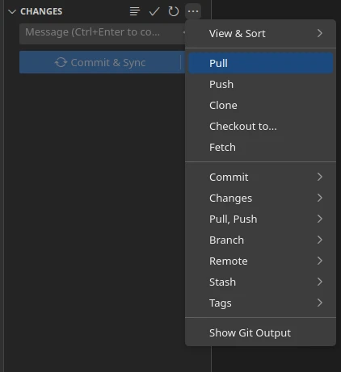
If you ever get a Merge Conflict and you are not sure how to fix that, contact your instructor or refer to this video on YouTube that shows you how to fix a merge conflict. Mastering Merge Conflicts in VS Code Se você encontrar um Merge Conflict e não souber como corrigi-lo, entre em contato com seu instrutor ou consulte este vídeo no YouTube que mostra como corrigir um merge conflict (Somente em inglês). Mastering Merge Conflicts in VS Code Si alguna vez recibe un Merge Conflict y no sabe cómo solucionarlo, comuníquese con su instructor o consulte este video en YouTube que muestra cómo solucionar un merge conflict (Solo en inglés). Mastering Merge Conflicts in VS Code
Merging dev branch to main branch to publish on GitHub Pages Mesclando branch dev ao branch main para publicar no GitHub Pages Fusionando el branch dev al branch main para publicar en GitHub Pages
As you push changes to GitHub, you may see the following message in Github on the Code page of your repository. You can ignore this until you are ready to merge it into the main branch. Conforme você envia alterações para o GitHub com push, pode ver a seguinte mensagem no GitHub na página Code do seu repositório. Você pode ignorar isso até estar pronto para mesclá-lo ao branch main. A medida que envía cambios a GitHub con push, es posible que vea el siguiente mensaje en GitHub en la página Code de su repositorio. Puede ignorar esto hasta que esté listo para fusionarlo en el branch main.
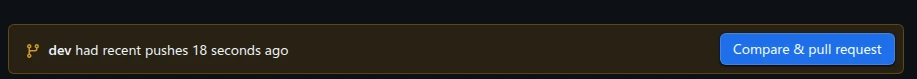
Once you are ready to publish your code so that it is available on GitHub Pages for grading, follow these steps. Quando estiver pronto para publicar seu código para que fique disponível no GitHub Pages para avaliação, siga estes passos. Una vez que esté listo para publicar su código para que esté disponible en GitHub Pages para evaluación, siga estos pasos.
- Make sure you are on the dev branch in VSCode. Certifique-se de estar no branch dev no VSCode. Asegúrese de estar en el branch dev en VSCode.
- Commit all your changes to the dev branch. Faça commit de todas as suas alterações no branch dev. Haga commit de todos sus cambios en el branch dev.
- Push the dev branch to GitHub. Envie o branch dev para o GitHub com push. Envíe el branch dev a GitHub con push.
- Go to GitHub and create a pull request from the dev branch to the main branch. Vá ao GitHub e crie um pull request do branch dev para o branch main. Vaya a GitHub y cree un pull request del branch dev al branch main.
- Review the changes and merge the pull request. Revise as alterações e mescle o pull request. Revise los cambios y fusione el pull request.
- Switch back to the main branch in VSCode. Volte para o branch main no VSCode. Cambie de regreso al branch main en VSCode.
- Pull the latest changes from the main branch. Faça pull das alterações mais recentes do branch main. Haga pull de los últimos cambios del branch main.
- Now your main branch is up to date with the dev branch. Agora seu branch main está atualizado com o branch dev. Ahora su branch main está actualizado con el branch dev.
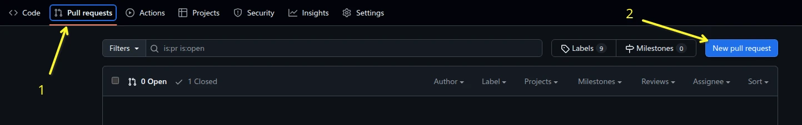
You will then select the main branch as the base branch and the dev branch as the compare branch. Você então selecionará o branch main como o branch base e o branch dev como o branch de comparação. Luego seleccionará el branch main como el branch base y el branch dev como el branch de comparación.
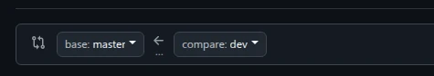
The web page will then fill in and it will look something like this. A página web será então preenchida e ficará parecida com isto. La página web se llenará y se verá algo así.
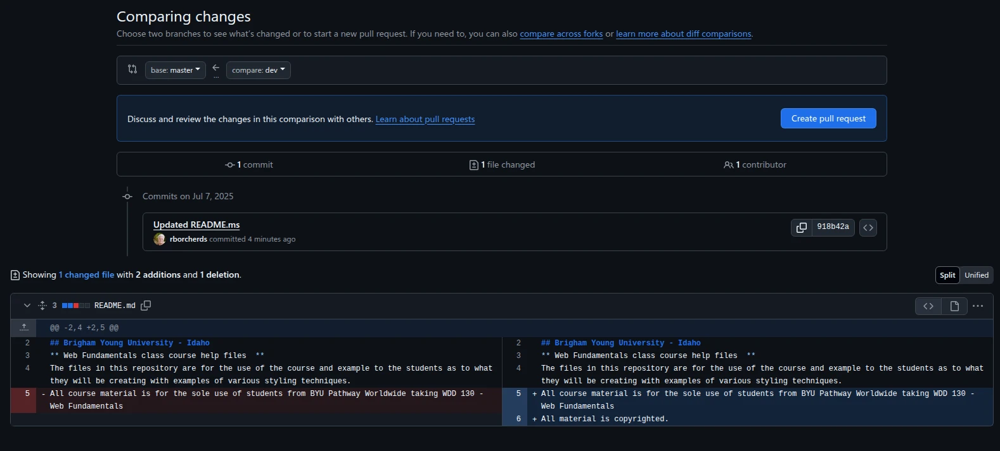
Click on the "Create pull request" button to create the pull request. Clique no botão "Create pull request" para criar o pull request. Haga clic en el botón "Create pull request" para crear el pull request.
GitHub will then show you the changes that will be merged into the main branch. You can review the changes and make sure everything looks good. O GitHub mostrará então as alterações que serão mescladas ao branch main. Você pode revisar as alterações e garantir que tudo esteja correto. GitHub luego le mostrará los cambios que se fusionarán en el branch main. Puede revisar los cambios y asegurarse de que todo se vea bien.
Once you are satisfied with the changes, you can add a title and description for the pull request. This will help you and others understand what changes were made and why. The screen will look something like this. Quando estiver satisfeito com as alterações, você pode adicionar um título e descrição para o pull request. Isso ajudará você e outros a entender quais alterações foram feitas e por quê. A tela ficará parecida com isto. Una vez que esté satisfecho con los cambios, puede agregar un título y descripción para el pull request. Esto le ayudará a usted y a otros a entender qué cambios se hicieron y por qué. La pantalla se verá algo así.
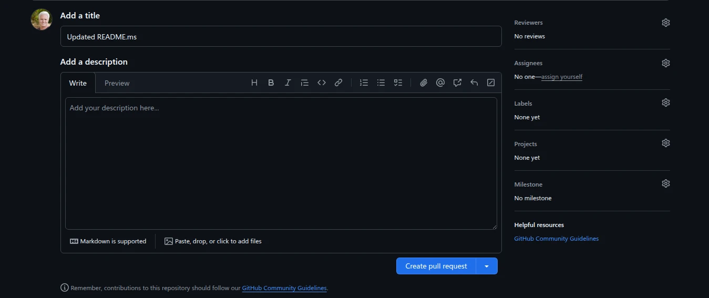
After you have added a title and description, click on the "Create pull request" button. This will create the pull request and notify the repository owner that there are changes ready to be reviewed. The owner in this case is you. Depois de adicionar um título e descrição, clique no botão "Create pull request". Isso criará o pull request e notificará o proprietário do repositório que há alterações prontas para serem revisadas. O proprietário neste caso é você. Después de agregar un título y descripción, haga clic en el botón "Create pull request". Esto creará el pull request y notificará al propietario del repositorio que hay cambios listos para ser revisados. El propietario en este caso es usted.
After you have created the pull request, you will see the page to merge the pull request. This will only show you the Merge pull request button if there are no conflicts with the code in the main branch. If there are conflicts you will have to decide how to handle the conflict so that you can merge the other changes into main. Depois de criar o pull request, você verá a página para mesclar o pull request. O botão Merge pull request só será exibido se não houver conflitos com o código no branch main. Se houver conflitos, você terá que decidir como lidar com o conflito para poder mesclar as outras alterações ao main. Después de crear el pull request, verá la página para fusionar el pull request. Este solo le mostrará el botón Merge pull request si no hay conflictos con el código en el branch main. Si hay conflictos, deberá decidir cómo manejar el conflicto para poder fusionar los otros cambios en main.
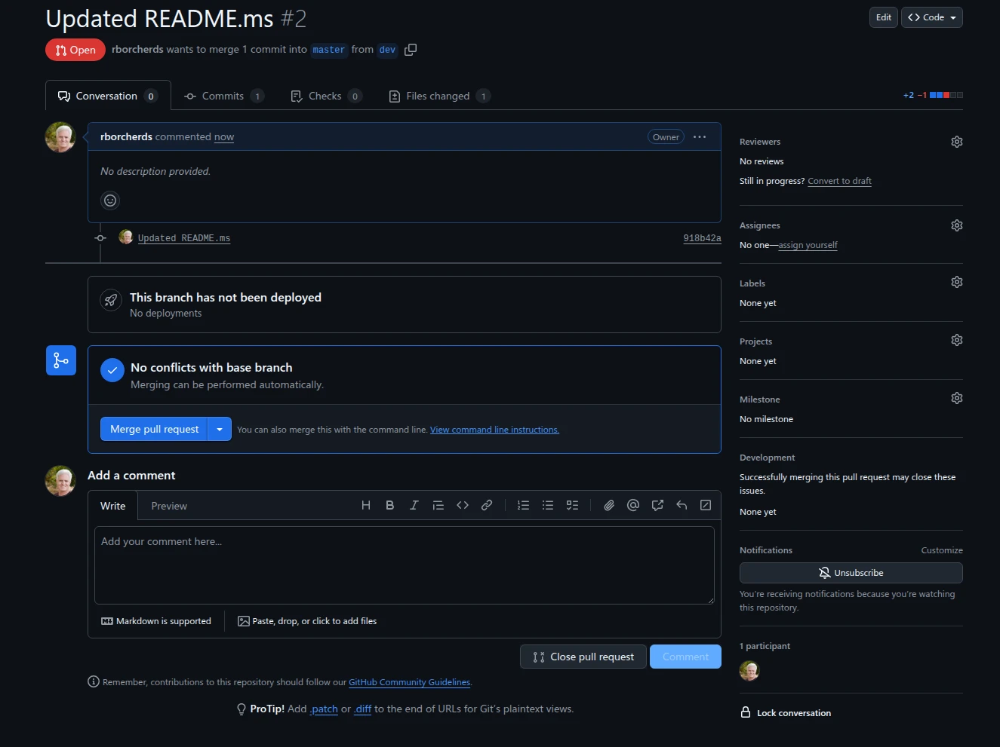
You can add more details in the comment area below the button. That is not necessary as you should be the only one making changes. This part is mainly used when there are multiple developers working on a project. Você pode adicionar mais detalhes na área de comentários abaixo do botão. Isso não é necessário, pois você deve ser o único a fazer alterações. Esta parte é usada principalmente quando há múltiplos desenvolvedores trabalhando em um projeto. Puede agregar más detalles en el área de comentarios debajo del botón. Eso no es necesario ya que usted debe ser el único que realiza cambios. Esta parte se usa principalmente cuando hay múltiples desarrolladores trabajando en un proyecto.
Click on the "Merge pull request" button to merge the changes from the dev branch into the main branch. Clique no botão "Merge pull request" para mesclar as alterações do branch dev ao branch main. Haga clic en el botón "Merge pull request" para fusionar los cambios del branch dev en el branch main.
After you click the "Merge pull request" button, GitHub will show you a confirmation page. You can review the changes one last time before merging. Click the Confirm merge button to finalize the merge. Depois de clicar no botão "Merge pull request", o GitHub mostrará uma página de confirmação. Você pode revisar as alterações uma última vez antes de mesclar. Clique no botão Confirm merge para finalizar a mesclagem. Después de hacer clic en el botón "Merge pull request", GitHub le mostrará una página de confirmación. Puede revisar los cambios una última vez antes de fusionar. Haga clic en el botón Confirm merge para finalizar la fusión.
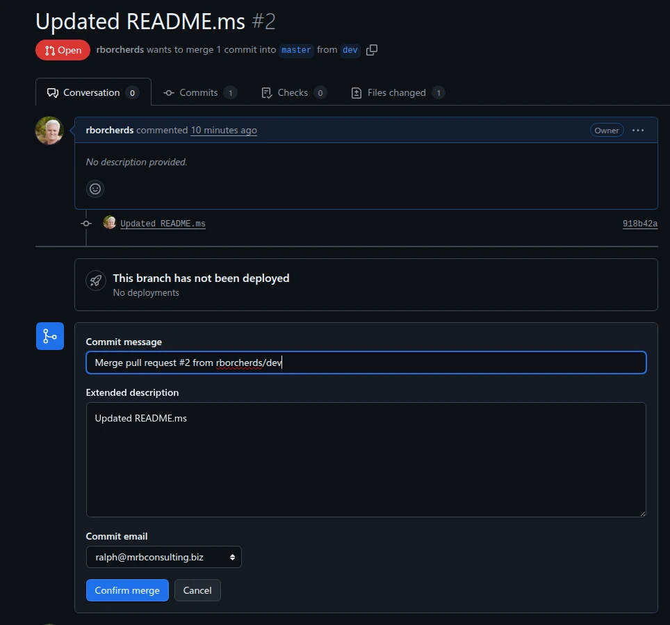
Once you confirm the merge, GitHub will merge the changes from the dev branch into the main branch. You will see a message indicating that the pull request was successfully merged. Após confirmar a mesclagem, o GitHub mesclará as alterações do branch dev ao branch main. Você verá uma mensagem indicando que o pull request foi mesclado com sucesso. Una vez que confirme la fusión, GitHub fusionará los cambios del branch dev en el branch main. Verá un mensaje indicando que el pull request se fusionó correctamente.
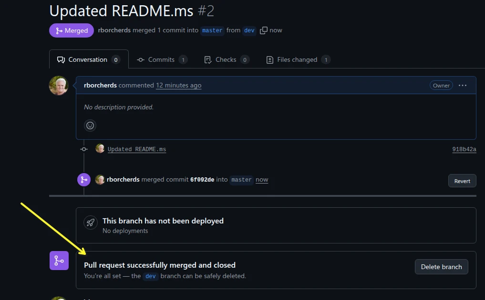
Once the pull request is merged, Give the system a couple of minutes and your changes will be live on GitHub Pages. Após mesclar o pull request, aguarde alguns minutos e suas alterações estarão publicadas no GitHub Pages. Una vez que se fusione el pull request, espere unos minutos y sus cambios estarán publicados en GitHub Pages.